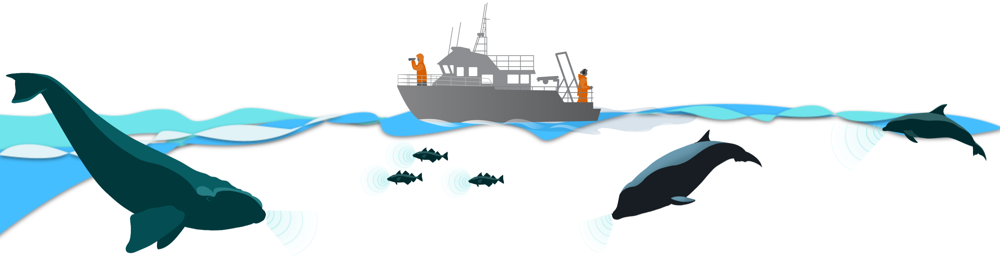

The NEFSC Passive Acoustic Branch uses a variety of passive acoustic recording platforms to monitor sounds in the ocean. PAM deployments often consist of co-located hardware to collect ancillary data about the ocean or provide mechanisms to recover the instruments.
Bottom-Mounted Mooring components
Bottom-mounted moorings are most commonly used for continuous monitoring at single location, providing long-term time series for marine mammals, fish, soundscapes, and anthropogenic noise. Our bottom mounted recorders use VEMCO acoustic release mechanisms to prevent the need for benthic-to-surface vertical line. We use different mooring designs for our three field sites (refer to field methods for more detail on mooring designs). Below is a list of our mooring hardware components, including our mooring’s primary components (Soundtrap, Fpods, VEMCOs) and auxiliary hardware.
Primary components
PABs primary instrument due to relatively long battery life and large memory, and broad sampling rate. Typical deployments consist of 5 month recording at 48kHz providing data for most cetaceans, fish and soundscapes.
F-PODs are a high-resolution click detector used to identify delphinids. The instrument is calibrated, has a long battery life and is an integrated product that records audio and automatically detects clicks.
VEMCO Acoustic Telemetry and Release (order site - InnovaSea, VR2AR Acoustic Release Receiver)
Acoustic telemetry release allows researchers to retrieve bottom-mounted recording devices using acoustic signalling. Using VEMCOs eliminates the need for surface buoys, mitigating whale entanglement risk. VEMCOs collect acoustic telemetry data, which is submitted to the Atlantic Cooperative Telemetry Network (ACT / MATOS).
Auxiliary components
Apollo X1 Satellite Beacon (order site)
- The Apollo Satellite Beacon is used to monitor unplanned or accidental release of subsurface instrument moorings.
Hermes Beacon Locator (order site)
- The Hermes Beacon Locator is used to communicate with the Apollo Satellite Beacon to locate mooring units at sea
HOBO Temperature Loggers (order site)
- Small mechanism that logs temperature over long periods of time. Requires HOBOware software and either an Optic USB Base Station or HOBO Waterproof Shuttle (U-DTW-1).
VEMCO VR100 Deck Box (order site)
- The VEMCO Deck Box is used to remotely connect and communicate with the submerged VEMCO, primarily to release the VEMCO from the bottom-mounted weights.
VHTx: Transponding Hydrophone (order site)
- Transponding hydrophone used for communication between VEMCO VR100 Deck Box and VEMCO Acoustic Release Receiver.
Additional Hardware
Dipping Hydrophone
Dipping hydrophones are acoustic recorders that are attached to a rope and suspended in the water. NEFSC’s PAM group uses dipping hydrophones to opportunistically collect gray seal acoustic data.
Technical Advice
Technical advice list
When should I replace my VR2AR / ASCENT-AR acoustic release battery?
- Replace the release motor AA batteries once they indicate they are approaching 25%. It is very strange that they did not last longer (5 years estimated life expectancy), but once you replace them, you will be prompted to reset the battery indicator within the VUE software. Vue should then indicate that they are at 100% again with the new batteries. You can then monitor the percentages in future deployments; if they continue to drop towards 25% quickly (within a year or two), then the receiver may be faulty or would at least warrant a call to Innovasea/Vemco to see what might be going on.
- Web resources:
Flooded ST600s
- Sent them back to Ocean Instruments to be fixed
- Email chains:
ST600 Battery bay malfunction
- Lots of advice from John Atkins - ended up needing to send back to be fixed
- Email chains:
ST600 clock drift
- Outcome - John Atkins was going to push a universal fix for this
- Email chains:
- Clock Drift
- Fix clock drift manually
- This email conversation can also be found on the server here: \\stellwagen.nefsc.noaa.gov\stellwagen\MANUALS_SOFTWARE_CODE LIBRARY\HARDWARE\SoundTraps
ST600 Broken Hydrophone
- Need to be sent back for repair
- Email chain:
Apollo Beacon Voltage
- Info on when to switch out batteries 2v is low, 2.5v is plenty
- Email chain:
FPOD Batteries
- Info on what types of batteries are compatible with FPODs
- Additional resources:
Piston phone ST calibration
- How to use the pistonphone to calibrate the STs
- Email chain:
Hydrophone bonding issue for ST600s serial # <7000
- The bond between the hydrophone and ST600 for serial #s prior to the 7000’s can degrade over time. Need to keep an eye out on hydrophone bond to ST for older ST600s
- Timothy Rowell - This did happen to the first one we had deployed in Rookery Bay Florida. Scrub gently and inspect often.
- Email chain:
Data upload errors
- Google Bucket error
- Examples - screenshots did not transfer in pdf
ST Recording Start Time Programming
- Error when setting recording start time to a previous/past time
- Email chains:
VR2AR temp/depth/tilt Data
- See email. How to download the temperature, depth, and tilt data recorded by VR2ARs
- Email chain:
Cross-center SoundTrap Issue Documentation
- It was brought up in a call today about a spreadsheet that has been shared amongst the science centers that annotates the various SoundTrap issues folks have been experiencing. I don’t see any of ours logged on there, if someone wants to and has a moment to log down our issues we’ve had? This is not a high priority by any means. Also I became aware of a StackExchange page that documents the known ST600 issues that I wanted to share with you.
- Additional resources:
ST Host Connection Error from 512GB SD Card
- Guidance on how to resolve a ST Host connection issue
- Email chain:
- Additional resources:
ST Host Software v4.0.19 and manual
- Guidance on how to resolve a ST Host connection issue. Ocean Instruments is strongly recommending SoundTrap users from here on out use ST Host version 4.0.19, which is their most recent non-beta software release. I came across this on their most recent ST600 manual. No specific reason was given other than that it will ensure correct operation of the SoundTrap recorders.
- Additional resources:
ST Card Reader Download Location